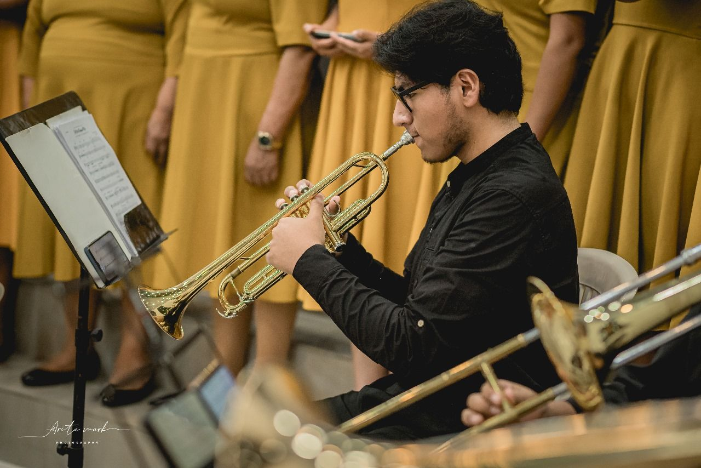
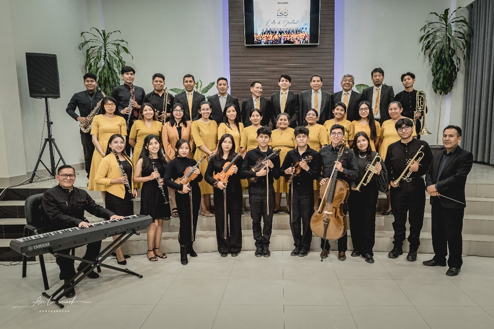
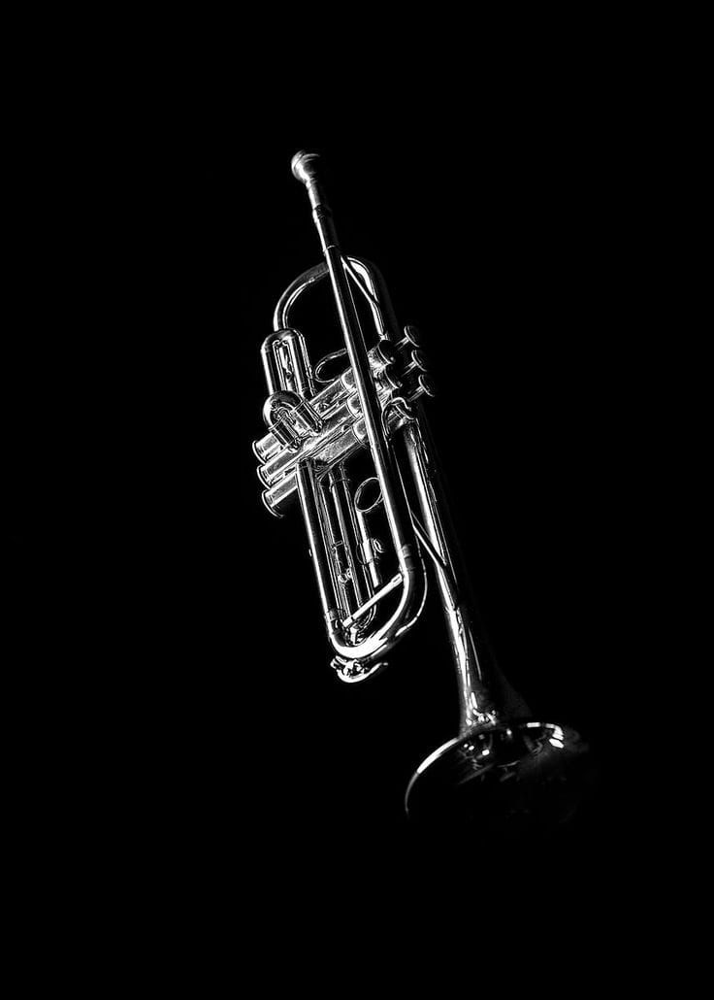
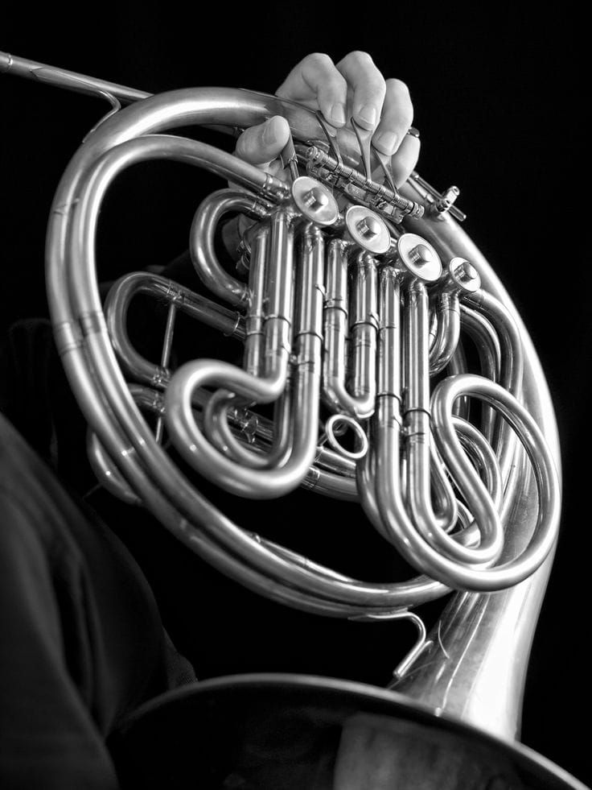
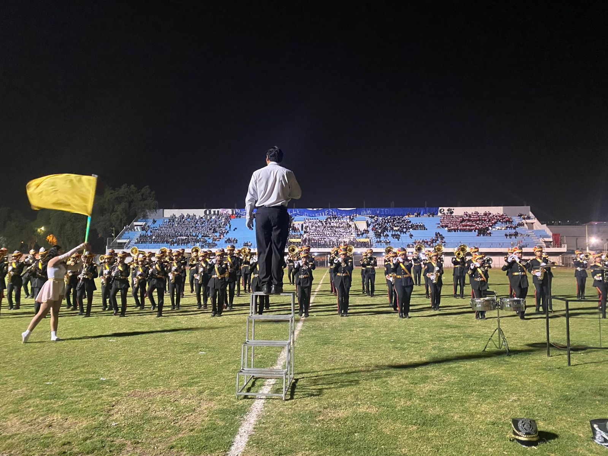
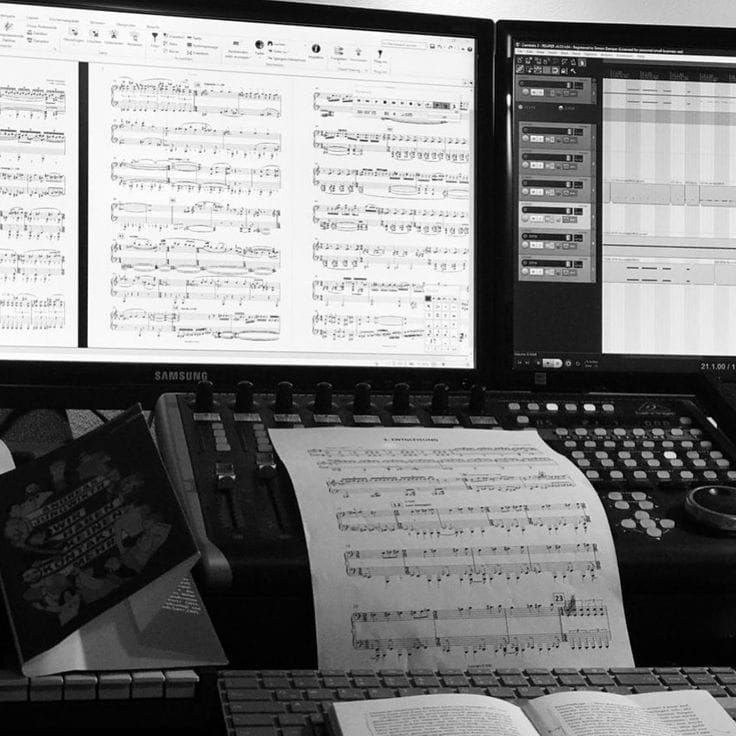

Sea exaltado
Escritura musical
Trabajo de escritura musical realizado por Jhesef.

Exploro la música desde la interpretación, la formación de nuevos músicos y la creación de materiales para agrupaciones de viento-metal.


Instrumento principal

Orquesta de la Coral Concordia
Viento-metal para banda
Soy Jhesef Condori Rondo, intérprete y educador musical. Mi actividad artística se desarrolla principalmente en el ámbito de los instrumentos de viento-metal, con especial dedicación a la trompeta, además del corno francés y el melófono.
He participado en bandas sinfónicas y agrupaciones orquestales, y he desarrollado experiencias de enseñanza y dirección de secciones de bronces.
También trabajo en la transcripción y adaptación de música para conjuntos de metales. Me interesa combinar la interpretación, la formación musical y el trabajo colectivo para construir experiencias musicales sólidas y expresivas.
Experiencia docente, trayectoria artística, formación académica y competencias musicales en una página.
PDF · 1 página · 664 KB
Formación y dirección de broncesEscritura y adaptación musical para agrupaciones de viento-metal: distribución de voces, partituras y arreglos pensados para la sonoridad de cada sección.
Trabajo de escritura musical realizado por Jhesef.

Concepto artístico del proyecto:
Propuesta para desarrollar una sección de bronces en una banda escolar, trabajada en conjunto con otros instructores. Toma inspiración de Drum Corps International (DCI), adaptada a estudiantes de secundaria.
Universidad Adventista de Bolivia (UAB)
Para instituciones, directores, agrupaciones, estudiantes y colaboradores.